- You do not need a password, a program or an app — only a web browser (Chrome, Edge, Firefox or Safari) and your email.
- Everything is saved automatically. You cannot break anything: every change can be undone.
- You can stop at any time and continue later.
Part A
Sign in
You do this the first time, and again when you come back on another day or another computer.
Open the website
Type green.rafdeild.com in the address bar of your browser and press Enter.
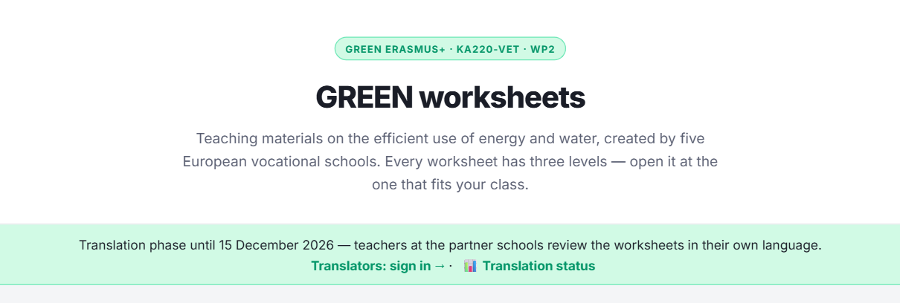
- 1In the green band, click “Translators: sign in →”.
Read about your data and tick the box
The first box tells you what we store about you and for how long. Please read it.
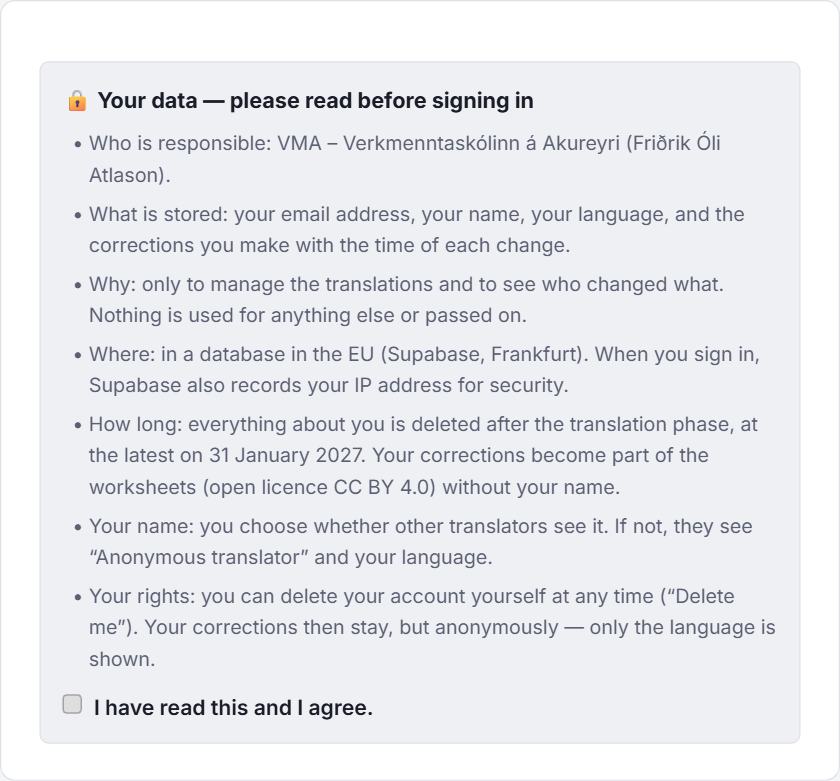
- 1Click the small box “I have read this and I agree.” so that a tick ✓ appears. The text then disappears and the next step opens.
Write your email address
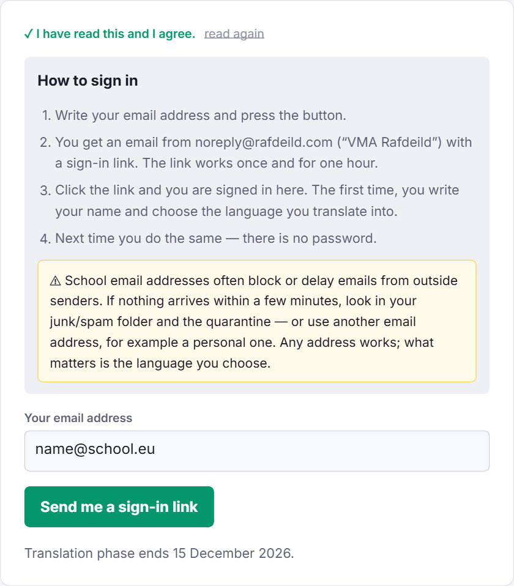
- 1Important: school email addresses often block emails like ours. If you can, use a personal email (Gmail, Outlook…). Any address works.
- 2Click in the white field and type your email address.
- 3Click the green button Send me a sign-in link.
Open the email and click the button
Go to your email (in a new tab or on your phone). Within a minute you get this email:
GREEN Erasmus+ · translations
Click the button to sign in and review the worksheets in your language.
Sign in to GREEN translationsThe link works once and expires after one hour.
- 1Click the green button in the email. The translations page opens and you are signed in.
No email? Wait two minutes, then look in the spam / junk folder. Still nothing? Go back to step 3 and use another email address.
Tip: open the email on the same computer where you will work. If you click the link on your phone, you are signed in on your phone.
Only the first time: your name and language
The first time, the page asks who you are:
Welcome! Tell us who you are
Write your name, choose your language, and click Start. You decide if other translators can see your name — if you leave the box empty, you are “Anonymous translator”.
Part B
Correct a text
Choose a worksheet
Now you see your worksheets: all 20 worksheets in your language.
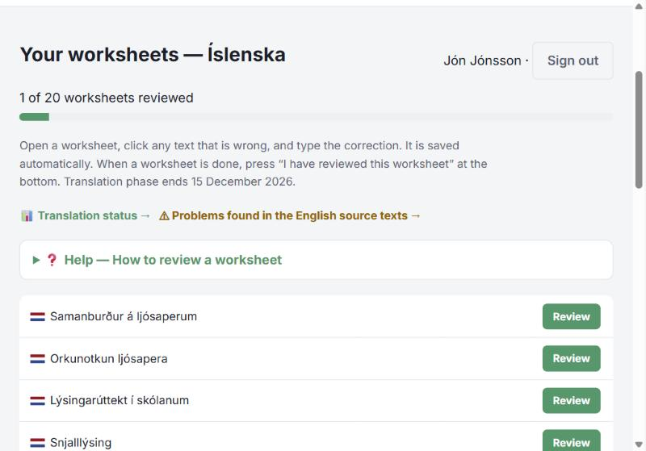
- 1How many worksheets you have finished.
- 2A short help text, if you forget how it works.
- 3Click Review next to a worksheet to open it. Start with any one — the order does not matter.
The first time: a help window
The first time you open a worksheet, a window with instructions appears. Read it if you like.
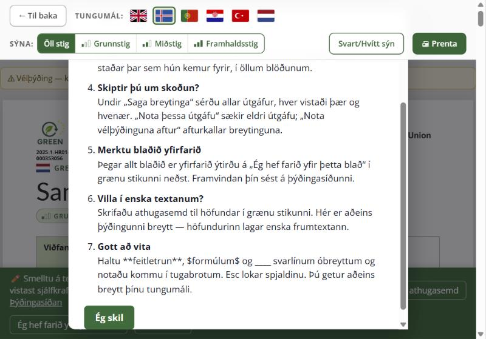
- 1Click Got it (in the picture: “Ég skil”) to close it. You can open it again with the ❓ Help button at the bottom.
The worksheet in edit mode
The worksheet looks like the printed version, with a green bar at the bottom of the screen. Scroll down and read the worksheet.
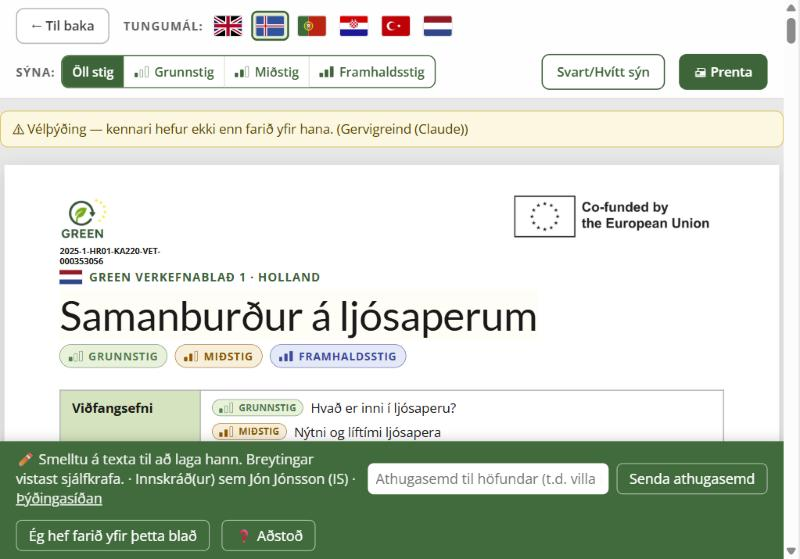
- 1The yellow note says that this is still a machine translation. It disappears when the worksheet is reviewed.
- 2The green bar has the buttons you need — more about them in Part C.
- 3“← Back” takes you back to your list of worksheets.
Click a text that is wrong
Found a mistake? Click on the text. It turns yellow, and a panel opens on the right.
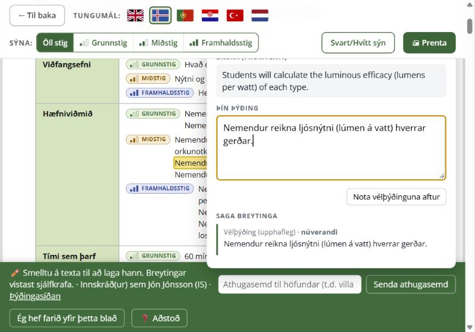
- 1The text you clicked is yellow.
- 2The English original — what the text should say.
- 3Your translation — the box where you write.
Type the correction — it saves itself
Click in the box, correct the words, and just stop typing. There is no save button.
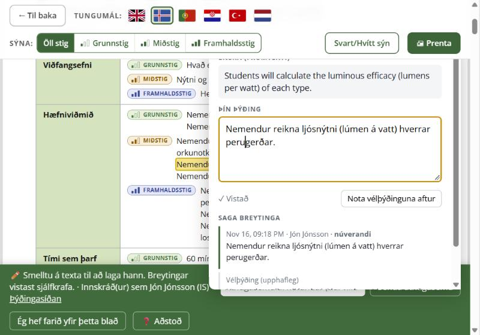
- 1Here we changed one word.
- 2After one second you see “✓ Saved” (in the picture: “✓ Vistað”). Done!
To close the panel, press Esc on the keyboard or click the ✕ at the top of the panel. Then click the next text you want to fix.
Corrected texts turn green
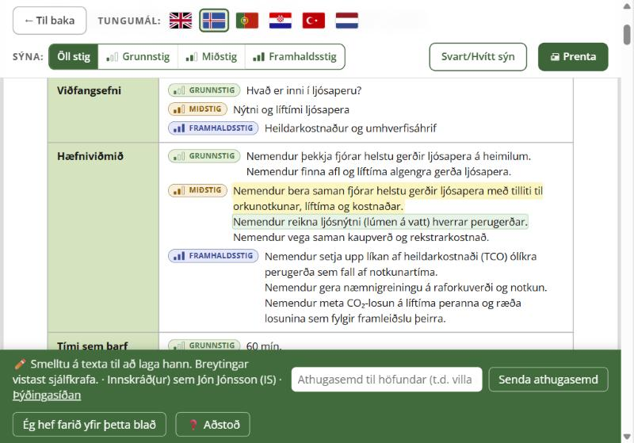
- 1A green background means: corrected by a teacher. A yellow background only shows where your mouse is.
Good to know: if the same sentence is used on other worksheets, your correction is used there too.
Made a mistake? Undo it
Click the text again. Under the box you see every version of this text.
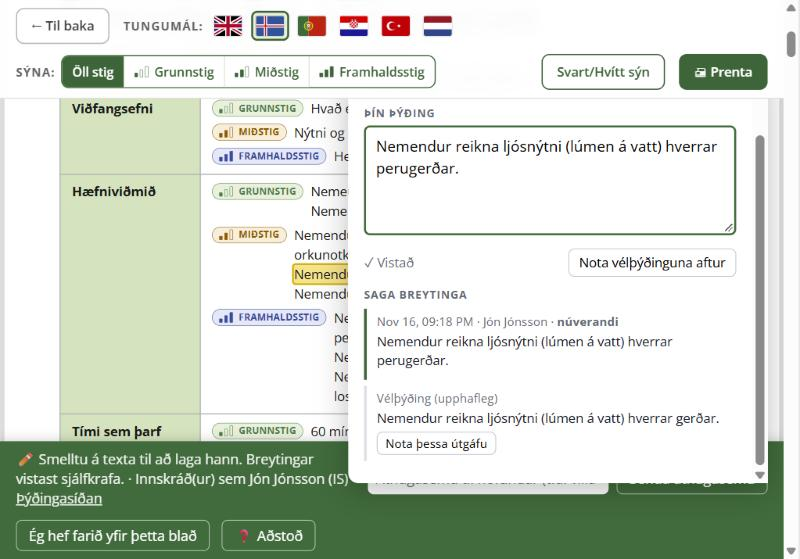
- 1“Use the machine translation again” — removes your change and puts back the computer’s text.
- 2“History of changes” — every version, who saved it and when. The top one is the current one.
- 3“Use this version” — brings back an older version.
Part C
Finish a worksheet
An error in the English text? Write a note
Sometimes the English original is wrong (a wrong number, a missing word). You cannot change the English text — but you can tell the author.
- 1Write what is wrong in the field “Note to the author” and click “Send note”. Example: “Task 3: 60 W should be 6 W.”
Problems we already know about are listed on the page Problems found in the English source texts.
When the whole worksheet is checked
- 1Click “I have reviewed this worksheet” (in the picture: “Ég hef farið yfir þetta blað”). It changes to “✓ Reviewed”.
Then click “← Back” at the top and choose the next worksheet. Clicked it too early? Click the button again to undo it.
See how everyone is doing
The translation status page shows all worksheets and all languages. Anyone can open it — no names are shown.
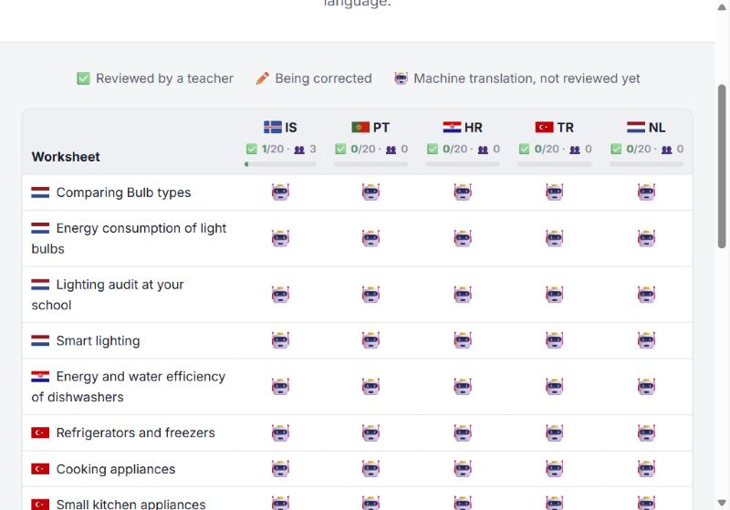
✅ reviewed by a teacher · ✏️ being corrected · 🤖 machine translation, not reviewed yet
Help
Problems and questions
The email does not arrive
Wait two minutes. Look in the spam / junk folder (and the “quarantine”, if your school has one). School email systems often stop emails from outside — use a personal email address instead. It does not matter which address you use.
The link says “expired” or “invalid”
A link works once and for one hour. Go to the translations page and ask for a new link (steps 1–4). Use the newest email.
I came back the next day — do I need to sign in again?
Usually not, on the same computer and browser. If the page asks you to sign in, do steps 1–4 again. There is no password to remember.
Can I lose my work?
No. Every correction is saved on the server one second after you stop typing. You can close the browser at any time.
The text has strange symbols like ** or $ or ____
Leave them as they are. **text** makes text bold, $…$ is a formula and ____ is a line where students write an answer. Translate only the words around them. Use the decimal comma of your language (2,5 not 2.5) if that is normal in your country.
Two of us translate the same language — is that a problem?
No. You both see the corrections live. The history shows who changed what. Agree who takes which worksheets.
How do I delete my account?
On the translations page, at the bottom under “Your account”, click “Delete me”. Your corrections stay on the worksheets without your name. All personal data is deleted after the translation phase anyway, at the latest on 31 January 2027.
Something else does not work
Ask in the project’s WhatsApp group, with a screenshot if possible.
GREEN Erasmus+ KA220-VET · 2025-1-HR01-KA220-VET-000353056 · CC BY 4.0